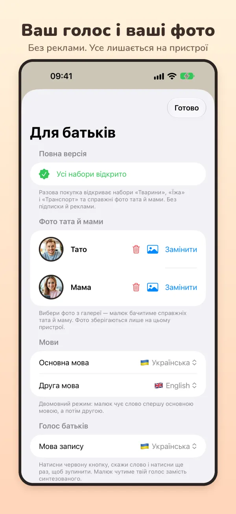
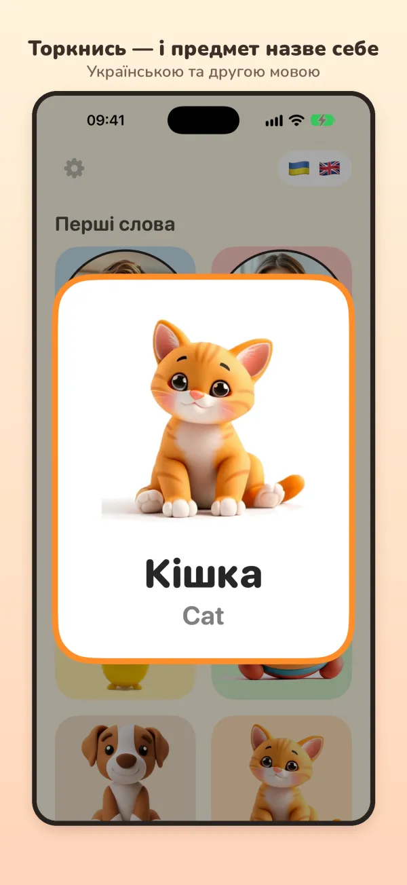
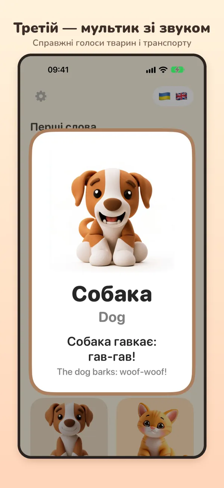
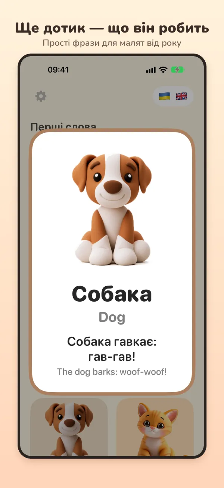
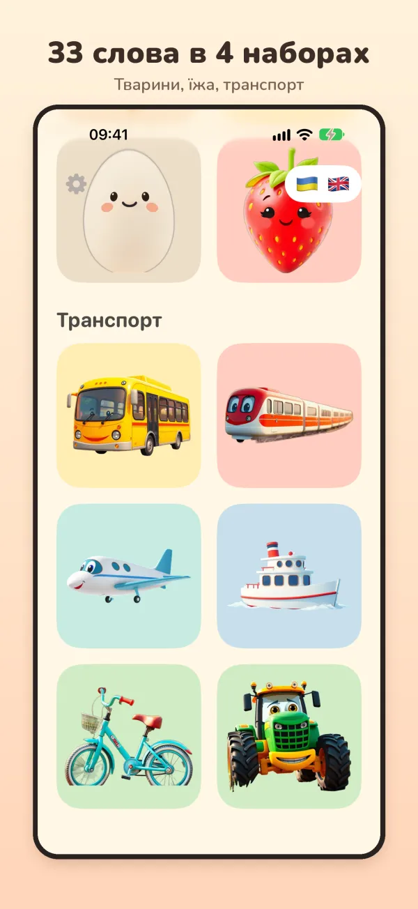

Чому батьки обирають ToT
Дитина чує рідну мову щодня, навіть якщо навколо звучить інша.
Ваш голос
Запишіть слова своїм голосом, і малюк чутиме саме вас: маму, тата чи бабусю.
8 мов і двомовний режим
Слово звучить спершу однією мовою, потім другою. Для сімей, де говорять кількома мовами.
Без реклами й підписок
Жодних банерів, відео-реклами чи щомісячних платежів. Нічого не відволікає малюка.
Одна покупка назавжди
Перший набір безкоштовний. Решту відкриває одна разова покупка.
Як це працює
Батьки готують, малюк грається. Три дотики — три кроки до слова.

Запишіть свій голос
У розділі для батьків запишіть слова й додайте фото мами й тата. Розділ закритий батьківським замком.

Малюк торкається
Предмет збільшується й називає себе вашим голосом, рідною мовою, а потім другою.

Слово оживає
Другий дотик: що він робить («Собака гавкає: гав-гав!»). Третій: короткий мультик зі справжніми звуками.
Подивіться ближче
33 слова в чотирьох наборах: Перші слова, Тварини, Їжа, Транспорт.


Що безкоштовно
Спробуйте з малюком перед покупкою.
Перші слова
- Набір «Перші слова»
- Озвучка однією з 8 мов на вибір
Уся книжка
- Набори «Тварини», «Їжа», «Транспорт»
- Запис слів вашим голосом
- Двомовний режим
- Справжні фото мами й тата в книжці
- Без підписки, назавжди
Безпечно для дитини
- Жодних даних не збираємо: записи голосу й фото лишаються на вашому пристрої.
- Без реклами, аналітики й стороннього відстеження.
- Покупки й налаштування за батьківським замком, щоб малюк не відкрив їх випадково.
- Працює без інтернету. Покупку обробляє Apple.
8 мов
Оберіть основну й другу мову. Записати свій голос можна будь-якою з них.
- Українська
- English
- Deutsch
- Polski
- Ελληνικά
- Italiano
- Español
- Français
Питання й відповіді
Для якого віку ToT?
Для малят від року. Великі картинки, прості фрази й керування одним дотиком.
Де зберігаються записи голосу й фото?
Лише на вашому пристрої. Ми нічого не завантажуємо на сервери. Якщо видалити застосунок, видаляться й записи.
Чи потрібен інтернет?
Ні. ToT працює без інтернету, з'єднання потрібне лише для покупки через App Store.
Що дає повна версія?
Набори «Тварини», «Їжа» й «Транспорт» та справжні фото мами й тата в книжці. Одна покупка, без підписки.
Як відновити покупку на новому пристрої?
У розділі для батьків натисніть «Відновити покупки». Потрібен той самий Apple ID.
Коли вийде застосунок?
ToT зараз на перевірці в App Store. Щойно його схвалять, тут з'явиться кнопка для завантаження.
Перші слова — вашим голосом
Для iPhone та iPad.
Скоро вApp Store